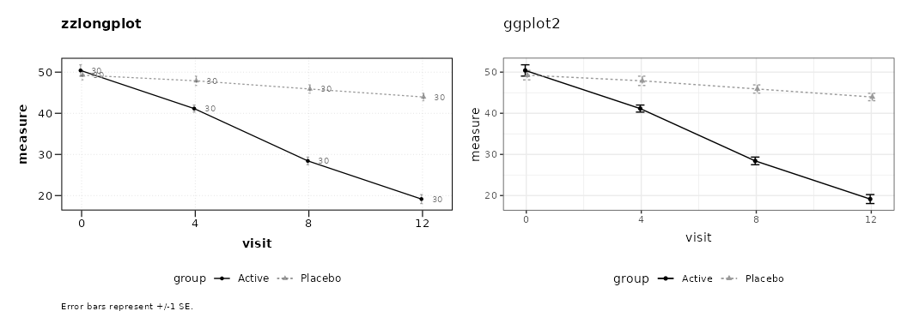
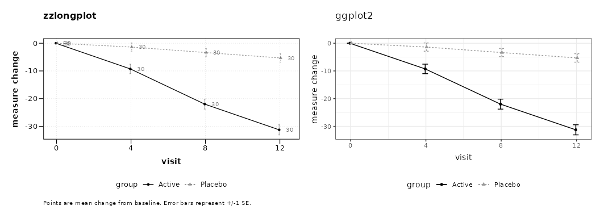
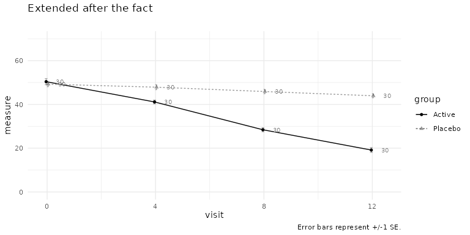
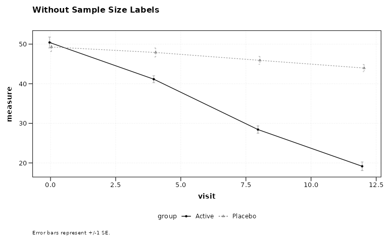
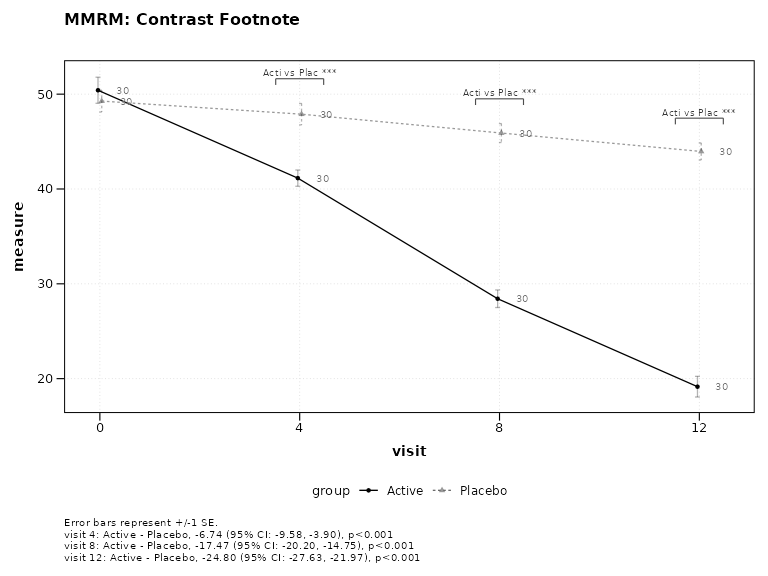
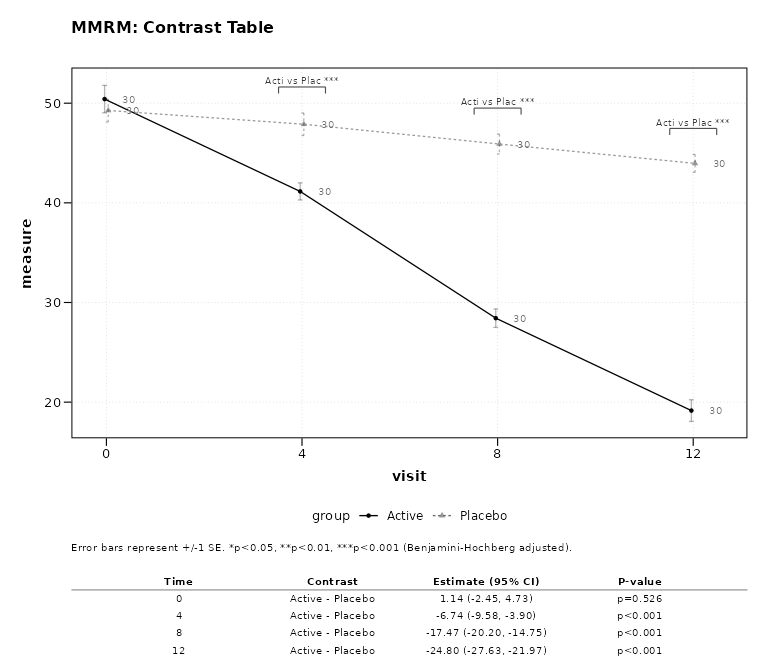
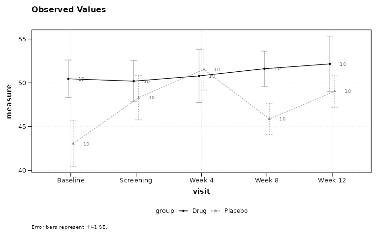

Quickstart Guide: zzlongplot
Ronald (Ryy) G. Thomas
2026-08-21
Source:vignettes/quickstart.Rmd
quickstart.RmdInstallation
# install.packages("pak")
pak::pak("rgt47/zzlongplot")Overview
zzlongplot is a wrapper around ggplot2. It exists to graph possibly complex longitudinal data with a minimum of syntax: you describe the data with a formula, and the package does the per-subject baseline arithmetic, the group-wise summarizing, the error bounds, the dodging, and the styling.
Two consequences follow, and both matter more than any individual option in this guide:
- The formula is usually the only thing you have to write. Everything else has a working default.
-
The result is an ordinary
ggplotobject. Anything you know how to do in ggplot2 still applies; you are never trapped inside the wrapper.
The rest of this section makes both points concrete by putting the
zzlongplot call next to the ggplot2 code it replaces.
Simulated Data
All examples use the following two-arm and three-arm datasets.
set.seed(42)
n_subj <- 60
subj_info <- data.frame(
subject_id = 1:n_subj,
treatment = rep(c("Active", "Placebo"), each = 30)
)
two_arm <- expand.grid(
subject_id = 1:n_subj,
visit = c(0, 4, 8, 12)
) |>
left_join(subj_info, by = "subject_id") |>
mutate(
response = 50 +
visit * ifelse(treatment == "Active", -2.5, -0.5) +
rnorm(n(), 0, 6)
)
subj_info3 <- data.frame(
subject_id = 1:90,
treatment = rep(
c("High Dose", "Low Dose", "Placebo"), each = 30
)
)
three_arm <- expand.grid(
subject_id = 1:90,
visit = c(0, 4, 8, 12)
) |>
left_join(subj_info3, by = "subject_id") |>
mutate(
response = 50 +
visit * ifelse(
treatment == "High Dose", -3,
ifelse(treatment == "Low Dose", -1.5, -0.5)
) + rnorm(n(), 0, 6)
)The Same Figure, Two Ways
Observed values
The formula response ~ visit | treatment reads “response
over visit, split by treatment”. Nothing else is required: the baseline
visit is detected from the data and the subject column defaults to
subject_id.
zzlongplot
p_zz <- lplot(
two_arm,
response ~ visit | treatment
)ggplot2
p_gg <- two_arm |>
group_by(treatment, visit) |>
summarise(
m = mean(response),
se = sd(response) / sqrt(n()),
.groups = "drop"
) |>
ggplot(aes(visit, m,
colour = treatment,
group = treatment,
linetype = treatment,
shape = treatment)) +
geom_errorbar(
aes(ymin = m - se, ymax = m + se),
width = 0.6,
position = position_dodge(0.15)
) +
geom_line(position = position_dodge(0.15)) +
geom_point(position = position_dodge(0.15)) +
scale_colour_grey(start = 0, end = 0.6) +
labs(x = "visit", y = "measure",
colour = "group", linetype = "group",
shape = "group") +
theme_bw() +
theme(legend.position = "bottom")
Three lines against roughly twenty-five. Note what the right-hand column has to spell out to match the default: the group summary, the standard error, the dodge applied consistently to three layers, and the redundant linetype and shape encoding that makes the figure survive grayscale printing.
Two things the left panel has that the right one does not, because they are on by default:
-
The per-timepoint sample size. CONSORT 2025 item 26
requires reporting the number of participants with available data at
each timepoint, and a curve whose denominator silently shrinks hides
attrition. Pass
show_sample_sizes = FALSEto suppress it. -
A caption naming the uncertainty measure.
Nature and Nature Medicine require all error bars to
be defined in the figure legend. The caption is generated from what was
actually computed, so it cannot drift from the statistics. Pass your own
caption, orauto_caption = FALSE, to take over.
Change from baseline
The gap widens as the question gets harder. Change from baseline
requires a per-subject lookup of that subject’s baseline value before
any group summarizing can happen. In zzlongplot it is one
argument.
zzlongplot
p_zz2 <- lplot(
two_arm,
response ~ visit | treatment,
plot_type = "change"
)ggplot2
p_gg2 <- two_arm |>
group_by(subject_id) |>
mutate(
change = response -
response[visit == 0][1]
) |>
ungroup() |>
group_by(treatment, visit) |>
summarise(
m = mean(change),
se = sd(change) / sqrt(n()),
.groups = "drop"
) |>
ggplot(aes(visit, m,
colour = treatment,
group = treatment,
linetype = treatment,
shape = treatment)) +
geom_errorbar(
aes(ymin = m - se, ymax = m + se),
width = 0.6,
position = position_dodge(0.15)
) +
geom_line(position = position_dodge(0.15)) +
geom_point(position = position_dodge(0.15)) +
scale_colour_grey(start = 0, end = 0.6) +
labs(x = "visit", y = "measure change",
colour = "group", linetype = "group",
shape = "group") +
theme_bw() +
theme(legend.position = "bottom")
The result is a ggplot
lplot() returns an ordinary ggplot object,
so the whole of ggplot2 remains available for anything the wrapper does
not cover.
lplot(two_arm, response ~ visit | treatment) +
scale_y_continuous(limits = c(0, 70)) +
labs(title = "Extended after the fact") +
theme_minimal()
One exception is worth knowing early: with
plot_type = "both" the return is a patchwork
of two panels rather than a single ggplot. It still prints
and still saves with ggsave(), but + then adds
to the composition rather than to one panel.
Basic Usage
The remaining examples pass baseline_value explicitly
and add titles and captions, since that is what a real figure needs.
Observed Values with Error Bars
lplot(two_arm,
response ~ visit | treatment,
baseline_value = 0,
title = "Observed Values: Error Bars")
Observed Values with Confidence Ribbons
lplot(two_arm,
response ~ visit | treatment,
baseline_value = 0,
error_type = "band",
title = "Observed Values: Confidence Ribbons")
Change from Baseline
lplot(two_arm,
response ~ visit | treatment,
baseline_value = 0,
plot_type = "change",
title = "Change from Baseline")
Combined Plot
lplot(two_arm,
response ~ visit | treatment,
baseline_value = 0,
plot_type = "both",)
Sample Size Annotations
Per-group sample sizes are shown at each timepoint by default, as in-plot labels. The alternative is a color-coded table below the x-axis, the layout familiar from the numbers-at-risk row under a Kaplan-Meier curve.
lplot(two_arm,
response ~ visit | treatment,
baseline_value = 0,
title = "With Sample Size Labels")
lplot(two_arm,
response ~ visit | treatment,
baseline_value = 0,
sample_size_opts = list(position = "table"),
title = "With Sample Size Table")
To suppress the annotation entirely, pass
show_sample_sizes = FALSE.
lplot(two_arm,
response ~ visit | treatment,
baseline_value = 0,
show_sample_sizes = FALSE,
title = "Without Sample Size Labels")
Statistical Annotations
Two-Group Comparison
Stars appear above timepoints where the adjusted p-value crosses standard significance thresholds.
lplot(two_arm,
response ~ visit | treatment,
baseline_value = 0,
statistical_annotations = TRUE,
title = "Two-Group: Significance Stars")
Three-Group Comparison with Pairwise Brackets
For three or more groups, pairwise brackets with significance stars are displayed at each timepoint.
lplot(three_arm,
response ~ visit | treatment,
cluster_var = "subject_id",
baseline_value = 0,
statistical_annotations = TRUE,
title = "Three-Group: Pairwise Brackets")
Contrast Display
When using test_method = "mmrm", emmeans contrast
results (LS mean difference, 95% CI, p-value) can be displayed as a
footnote or a table below the plot.
This requires the suggested packages mmrm and emmeans. The two figures in this section are only built when both are installed.
Footnote Mode
lplot(two_arm,
response ~ visit | treatment,
baseline_value = 0,
statistical_annotations = TRUE,
test_method = "mmrm",
contrast_display = "footnote",
title = "MMRM: Contrast Footnote")
Table Mode
lplot(two_arm,
response ~ visit | treatment,
baseline_value = 0,
statistical_annotations = TRUE,
test_method = "mmrm",
contrast_display = "table",
title = "MMRM: Contrast Table")
Publication Themes
Black-and-White Print Theme
This is the default. Groups are distinguished redundantly by linetype and point shape as well as by color, and the palette itself is grayscale, so the figure survives grayscale printing and photocopying.
lplot(two_arm,
response ~ visit | treatment,
baseline_value = 0,
title = "Black-and-White Theme (Default)")
NEJM Theme
Pass the theme by name through theme =. This applies the
journal’s typography and its official color palette in
one step. Adding + theme_nejm() to a finished plot changes
only the typography, so the colors would stay on the default grayscale
palette.
lplot(two_arm,
response ~ visit | treatment,
baseline_value = 0,
theme = "nejm",
title = "NEJM Theme")
Tips
Ordering Categorical Visit Labels
When the x-axis variable is character or factor (e.g., visit names
rather than numeric week numbers), R defaults to alphabetical order.
Convert to a factor with explicit levels before calling
lplot():
visit_labels <- c("Screening", "Baseline", "Week 4", "Week 8", "Week 12")
labelled <- data.frame(
subject_id = rep(seq_len(20), each = 5),
visit = rep(visit_labels, times = 20),
treatment = rep(c("Drug", "Placebo"), each = 5, length.out = 100),
response = rnorm(100, mean = 50, sd = 8)
)
# Without this step the x-axis would run Baseline, Screening, Week 12,
# Week 4, Week 8 -- alphabetical rather than chronological.
labelled$visit <- factor(labelled$visit, levels = visit_labels)
lplot(labelled, response ~ visit | treatment,
cluster_var = "subject_id",
baseline_value = "Baseline")
Numeric visit variables (e.g., visit = c(0, 4, 8, 12))
are sorted numerically by default and do not require this step.
Quick Reference
Formula Syntax
outcome ~ time | group-
outcome: Response variable (y-axis) -
time: Time variable (x-axis) -
group: Grouping variable (colors/lines)
Key Parameters
| Parameter | Description | Default |
|---|---|---|
plot_type |
“obs”, “change”, or “both” | “obs” |
error_type |
“bar” or “band” | “bar” |
baseline_value |
Value identifying baseline | NULL |
show_sample_sizes |
Show N at each timepoint | FALSE |
statistical_annotations |
Significance annotations | FALSE |
test_method |
“parametric”, “nonparametric”, or “mmrm” | “parametric” |
p_adjust_method |
Multiplicity correction | “BH” |
contrast_display |
“footnote” or “table” (MMRM) | NULL |
summary_statistic |
“mean”, “mean_se”, “median”, “boxplot” | “mean” |
confidence_interval |
Level for CI bounds, e.g. 0.95;
NULL gives +/-1 SE |
NULL |
theme |
“bw”, “nejm”, “nature”, “lancet”, “jama”, “science”, “jco”, “fda”, “default” | NULL (see below) |
cluster_var |
Subject ID column | “subject_id” |
facet_form |
Faceting formula (e.g., ~ site) |
NULL |
theme = NULL resolves to "bw" for a plain
call, to "nejm" under clinical_mode = TRUE,
and to "nature" under
publication_ready = TRUE. Passing theme
explicitly overrides all of these.
Note that confidence_interval applies only to
summary_statistic values "mean" and
"median". With "mean_se" the bars are always
+/-1 standard error, and with "boxplot" they are quartiles
and whiskers; in both cases no confidence level is claimed.
Next Steps
-
vignette("zzlongplot_introduction")– Detailed introduction -
vignette("mmrm-analysis")– MMRM analysis workflow -
vignette("clinical-trials")– Clinical trial applications -
vignette("cdisc-compliance")– CDISC-compliant workflows -
vignette("publication-themes")– Publication-ready themes